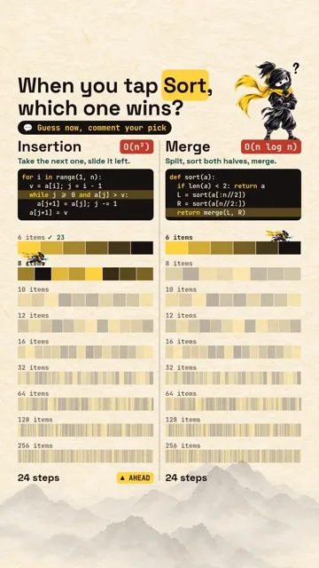

WHICH WINS? #1 counted steps, not timed
Insertion Sort vs Merge Sort
ROUND 1Small lists (6 to 10 items)
6 items: insertion 23 steps, merge 26. Insertion leads until the 10-item listWinner: Insertion sortROUND 2All nine lists, up to 256 items
Merge 6,685 steps in total, insertion 44,591Winner: Merge sortInsertion sort (O(n²)) wins on tiny lists; merge sort (O(n log n)) wins as lists grow. Python's own sort uses both.
Interview question
Why would a real sort use insertion sort at all?
On a handful of items it does less work than merge sort, so libraries sort short runs with it and merge the runs (CPython's list sort does this).